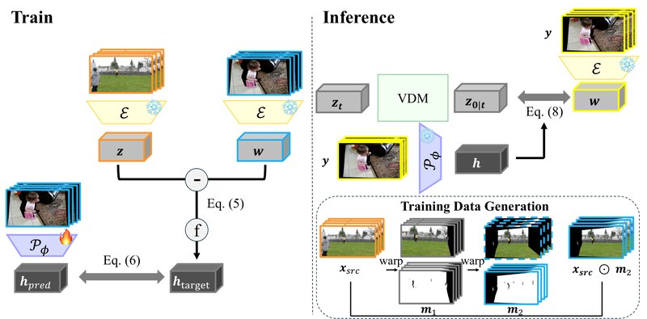
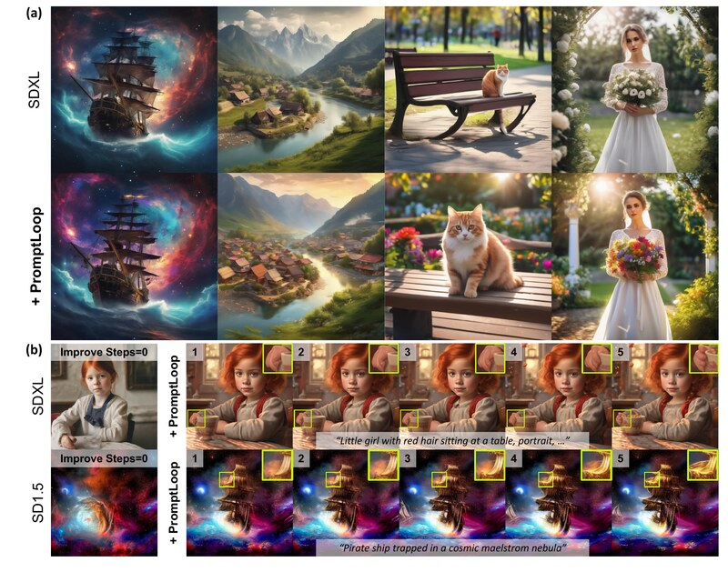
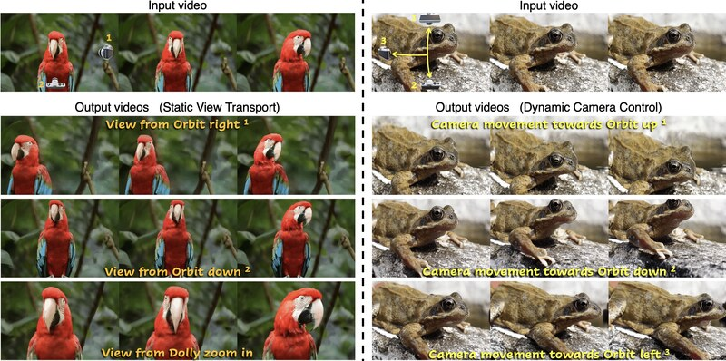
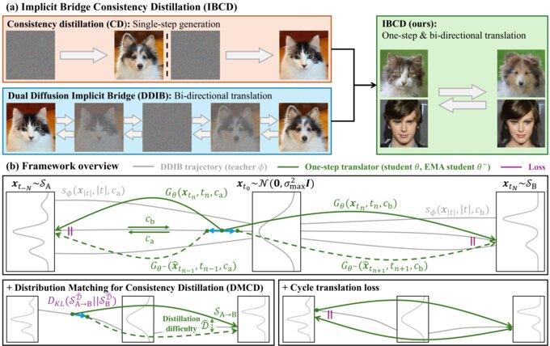
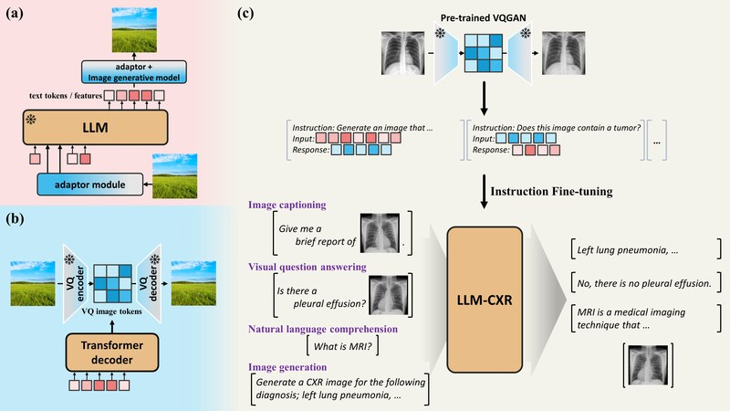
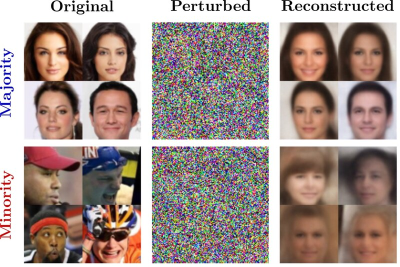
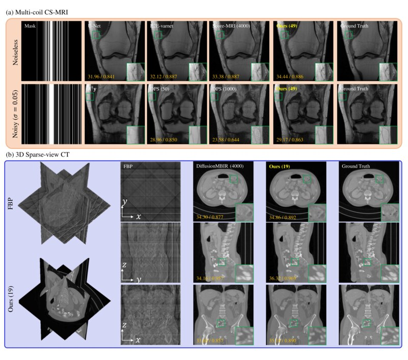
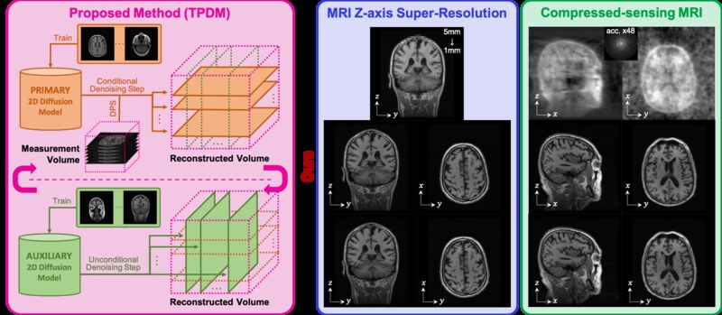

About Me
I am a Ph.D. student at KAIST AI (Kim Jaechul Graduate School of AI), advised by Prof. Jong Chul Ye at the Bioimaging, Signal Processing and Learning Lab (BiSPL). I received my B.S. in Computer Science and Bio and Brain Engineering (double major) from KAIST, graduating Summa Cum Laude.
My research explores diffusion and flow models for visual generation, with a particular focus on measurement-consistent controllable generation and inverse problems.
- Generative Models
- Diffusion/Flow Models
- Controllable Generation
- Inverse Problems
News
- Jul. 2026 "InverseCrafter: Efficient Video ReCapture as a Latent Domain Inverse Problem" accepted to ECCV 2026.
- Apr. 2026 Started research internship at Adobe Research, London.
- Feb. 2026 "PromptLoop: Plug-and-Play Prompt Refinement via Latent Feedback for Diffusion Model Alignment" accepted to CVPR 2026.
- Aug. 2025 Started research internship at NAVER Cloud (Generation Research, AI Lab).
- Jul. 2025 "Reangle-A-Video: 4D Video Generation as Video-to-Video Translation" accepted to ICCV 2025.
- Sep. 2024 Started Ph.D. at KAIST AI.
- Jan. 2024 "LLM-CXR", "Don't Play Favorites: Minority Guidance for Diffusion Models", and "Decomposed Diffusion Sampler for Accelerating Large-Scale Inverse Problems" accepted to ICLR 2024.
- Jul. 2023 "Improving 3D Imaging with Pre-Trained Perpendicular 2D Diffusion Models" accepted to ICCV 2023.
- Aug. 2022 Started M.S. at KAIST AI.
Industry Experience
Research Intern, Adobe Research, London, United Kingdom
April 2026 – August 2026
Research Intern, NAVER Cloud (Generation Research, AI Lab), Seongnam, Republic of Korea
August 2025 – February 2026
Publications
P: preprint, C: conference · * denotes equal contribution



[P1] Single-Step Bidirectional Unpaired Image Translation Using Implicit Bridge Consistency Distillation
arXiv preprint (2025).



